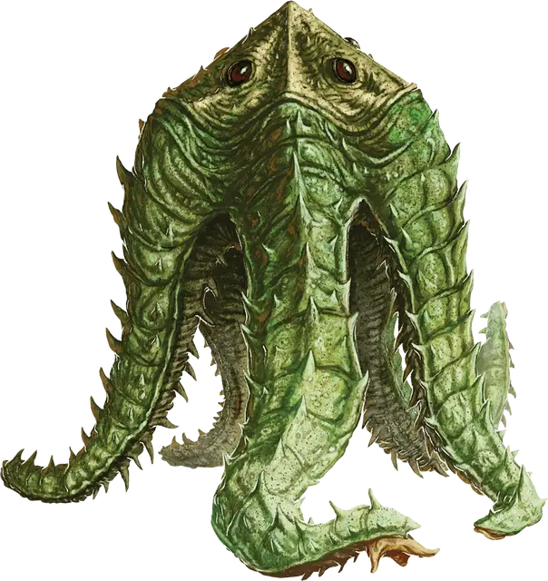

Аартук-старейшина
Aartuk Elder
Большое Растение, обычно законно-злое

Класс Доспеха 16 (природный доспех)
Хиты 75 (10к10 + 20)
Скорость 20 футов, лазая 20 футов
| мод | спас | ||
|---|---|---|---|
| СИЛ | 18 | +4 | +4 |
| ЛОВ | 10 | +0 | +0 |
| ТЕЛ | 15 | +2 | +2 |
| мод | спас | ||
|---|---|---|---|
| ИНТ | 12 | +1 | +1 |
| МДР | 14 | +2 | +2 |
| ХАР | 12 | +1 | +1 |
Чувства тёмное зрение 60 футов, пассивное Восприятие 12
Языки Язык Аартуков
Опасность 3 (700 опыта)
Бонус мастерства +2
Особенности
Паучье лазание. Аартук может карабкаться по сложным поверхностям, в том числе вверх ногами по потолку, без необходимости совершать проверки характеристик.
Действия
Мультиатака. Аартук совершает или две атаки Ветвями, или две атаки Гранулами света, или по одной каждой каждой из них.
Ветвь. . Рукопашная атака оружием: +6 к попаданию, досягаемость 10 фт., одна цель. Попадание: 11 (2к6 + 4) дробящего урона.
Гранула света. . Дальнобойная атака заклинанием: +4 к попаданию, дальность 60 футов, одна цель. Попадание: 10 (4к4) урона излучением.
Использование заклинание (псионика). Базовой характеристикой аартука является Мудрость (Сл спасброска от заклинаний 12). Он может накладывать следующие заклинания, не нуждаясь ни в каких компонентах:
• 1/день каждое: обнаружение магии [detect magic], послание [sending], умиротворение [calm emotions]
Бонусные действия
Язык (перезарядка 6). Аартук пытается использовать свой липкий язык, чтобы поймать в ловушку одно существо Большого размера или меньше, которое он может видеть в пределах 30 футов от себя. Цель должна совершить спасбросок Ловкости Сл 12. При провале цель становится схваченной языком (Сл высвобождения 14) и подтягивается на 25 футов к аартуку. Язык может схватить одно существо за раз.
Описание
Аартуки — разумные растения, живущие ради войны. Бехолдеры уничтожили их родной мир и рассеяли выживших по всему Материальному плану. Эти выжившие сформировали небольшие ячейки кочевников.
Их можно найти по всему Дикому космосу, в том числе и на борту магических кораблей, чьи экипажи были либо убиты, либо выброшены за борт бандой аартуков.
Форма тела аартуков напоминает пятиконечную звезду и оно покрыто толстой эластичной корой. На концах их ветвеобразных конечностей находятся присоски, позволяющие им карабкаться по вертикальным поверхностям и потолкам. В каждой присоске содержатся три втягивающихся ложноножки, которые используются для обращения с мелкими объектами.
Голова аартука закреплена на стебле высотой 6 футов, выдвигающемся из центра звезды. В голове находятся органы чувств аартука, включая длинный язык, используемый им как оружие.
Любимый способ атаки аартука — выстрелить своим липким языком во врага и подтащить его к центру своего тела, чтобы можно было нанести удар своими мощными ветвями. Он также может плеваться гранулами, заряженными энергией излучения.
Аартуки общаются друг с другом с помощью шуршащих звуков, щелчков, хлопков и шипения. Письменность у них отсутствует.